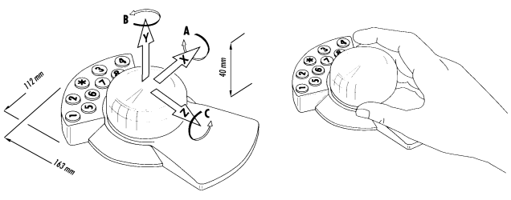

For those of us on Apple's QuickDraw 3D team, the highlight of SIGGRAPH '95 (the
annual conference of the ACM's computer graphics interest group) was having the
chance to work with developers who were showing QuickDraw 3D products.
Considering that we only started working with developers in December 1994, the
number of applications already up and running is inspiring. By the time you read this
column, 10 or 15 QuickDraw 3D products will be shipping, including modeling and
animation software, 3D hardware accelerators, 3D model clip art, and games. More
than 50 developers are actively working on products based on QuickDraw 3D, and
those will ship in 1996.
If you're not yet a QuickDraw 3D developer and don't want to be left out, take a look at
the develop articles "QuickDraw 3D: A New Dimension for Macintosh Graphics" in
Issue 22 and "The Basics of QuickDraw 3D Geometries" in Issue 23. This column gives
a hodgepodge of additional information.
IMPROVING ACCELERATOR PERFORMANCE
One of the things that has attracted developers to QuickDraw 3D is seamless access to
hardware acceleration. In addition to Apple's PCI accelerator card, hardware
acceleration cards have been announced by Matrox, Yarc, Radius, and Newer
Technology. If you really want your application to fly, you need to make sure that
you're using the fastest renderer possible and that if a hardware acceleration card is
installed, you're using the card. If you use the QuickDraw 3D API, QuickDraw 3D will
take care of this for you, but there's something else you can do that might improve
your application's performance.
Certain cards, including Apple's accelerator card, will yield better frame rates in
some situations if you use what we call double buffer bypass, an option enabled by a
flag. Double buffering causes all objects to be drawn first into a back buffer; this
entire buffer is then copied to the front buffer (the window). If the scene you're
rendering is simple and thus takes very little time to redraw -- say, less than 1/10
of a second -- enabling double buffer bypass is faster because it avoids having to copy
memory from the back buffer to the front buffer. On the other hand, if you use this
option with a complex scene, tearing may occur. Therefore, you may want to time a
frame (and take into account the complexity of your models) before using double
buffer bypass. To time a frame, call the Toolbox routine Microseconds, draw the
frame, call Q3Renderer_Sync to make sure the frame has been fully drawn, and then
call Microseconds again and subtract the start time from the end time.
If you're using QuickDraw 3D's interactive software renderer, all the code you need to
turn on double buffer bypass is shown in Listing 1.
Listing 1. Turning on double buffer bypass
// Create the renderer.
if ((myRenderer = Q3Renderer_NewFromType(kQ3RendererTypeInteractive))
!= nil) {
if ((myStatus = Q3View_SetRenderer(myView, myRenderer))
== kQ3Failure) { // Handle the error.
...
} // Set bypass.
Q3InteractiveRenderer_SetDoubleBufferBypass(myRenderer, kQ3True);
}
The interactive renderer can render using software only or using hardware
acceleration. The interactive renderer is set by default to look for the best device
possible, so if a hardware accelerator is installed, the accelerator will always be used.
On occasion, though, you may want to switch from using hardware to using software
(for demos or testing, for example). In this case you must explicitly request the
software rasterizer, as follows:
Q3InteractiveRenderer_SetPreferences(myRenderer, kQAVendor_Apple, kQAEngine_AppleSW);
INTERACTING WITH INPUT DEVICES
QuickDraw 3D provides an input device abstraction layer that allows you to interact
with different input devices without having to write special code for each of them. The
sample application NewEra demonstrates interaction with tablets and other input
devices; this application is available on the CD that comes with the book 3D Graphics
Programming With QuickDraw 3D, and a newer version can be found on this issue's
CD.
To take advantage of QuickDraw 3D's input device layer, you need to create a tracker
object and associate it with a controller object (created by an input device driver), as
Listing 2 does. Once you've set up your tracker, you can poll it to get its new position
and orientation, as shown in Listing 3. To reflect the change in your scene, you apply
the values returned by the tracker to a transform object, affecting either a particular
geometry or group (if an object was selected and being manipulated) or the camera,
depending on the interaction model for your application.
Listing 2. Creating a tracker object and attaching it to a controller object
theDocument->fPositionSN = 0;
theDocument->fRotationSN = 0;
theDocument->fTracker = Q3Tracker_New(NULL);
myStatus = Q3Controller_Next(NULL, &controllerRef);
while (controllerRef != NULL && myStatus == kQ3Success) {
Q3Controller_SetTracker(controllerRef, theDocument->fTracker);
myStatus = Q3Controller_Next(controllerRef, &controllerRef);
}
Listing 3. Updating position and orientation
// We received a null event; grab a new position and orientation
// for the model.
TQ3Boolean positionChanged;
TQ3Boolean rotationChanged;
Q3Tracker_GetPosition(doc.fTracker, &doc.fPosition, NULL,
&positionChanged, &doc.fPositionSN);
Q3Tracker_GetOrientation(doc.fTracker, &doc.fRotation, NULL,
&rotationChanged, &doc.fRotationSN);
QuickDraw 3D's input device abstraction layer also makes writing input device
drivers easier. For example, it took us about three days to write a driver for the
Magellan device from Logitech, Inc., a 3D input device with six degrees of freedom. As
illustrated in Figure 1, this device enables movement along the x, y, and z axes, as
well as rotation about the three axes.

Figure 1. Magellan: a six-degrees-of-freedom input device (courtesy of Logitech)
SETTING THE CORRECT FILE TYPE
When saving QuickDraw 3D metafiles, you should set the file type as '3DMF',
regardless of how the contents of the file are formatted (as plain-text or binary, or
any combination of the different types of organization, such as database or stream).
This will enable the file to be read or opened by other QuickDraw 3D applications. If
you'd like your end users to read a file as text, add an Export As Text option to your
application and then set the file type to 'TEXT'. This is helpful for debugging (and for
sending questions or bugs to Developer Technical Support).
HAVING FUN WITH CUSTOM ATTRIBUTES
By taking advantage of QuickDraw 3D's custom attributes and extensible metafile
format, you can have objects that encapsulate specialized data relevant to your
application. For instance, to navigate through the World Wide Web in 3D, you can
attach Web data (like URLs) to QuickDraw 3D objects as custom attributes. When
those objects or scenes are read into one of the many viewers supporting the URL
custom attribute, the viewer can communicate through Apple events with applications
like Netscape (or your favorite Web browser) to produce 3D navigation. You'll find a
sample application that shows how to do this on this issue's CD.
Custom attributes also enable you to associate sound and other data with objects in
your 3D scene.
DEBUGGING
There are two really handy techniques that you can use to diagnose problems you may
be having with your QuickDraw 3D application. For both of these approaches to
debugging your software, you'll want to make sure that you have MacsBug installed on
your machine and that you're using the debugging version of the QuickDraw 3D
extension supplied with the QuickDraw 3D development software.
The first technique is to install error and warning handlers, described in our article
in develop Issue 22. Error and warning handlers are particularly useful for telling
you of potential problems with your use of the QuickDraw 3D library. If you don't
install error and warning handlers, you won't know if you're doing something that the
library identifies as erroneous. Although we stated this in our original article, many
developers missed its significance and thus have experienced longer debugging times
than necessary and a great deal of frustration.
The second technique is to use a software tool, the 3D debugger, included on this issue's
CD. This application enables you to examine the QuickDraw 3D heap and look at the
different objects, their attributes, and their reference count. Please note that you're
looking under the hood, so you may encounter untyped blocks, and the reference count
for objects may reflect references internal to the QuickDraw 3D system.
LOOKING AHEAD
We'll continue to release great new QuickDraw 3D features, so bring your applications
along for the ride. By early 1996 we expect to have all major existing 3D applications
on the Macintosh using QuickDraw 3D, along with applications that developers port
from other platforms. Many 2D applications will be making use of the 3D Viewer as
well.
Watch develop for further articles about other aspects of QuickDraw 3D. Meanwhile,
you may want to check out the Addison-Wesley book 3D Graphics Programming With
QuickDraw 3D (which includes the QuickDraw 3D development software) and see this
issue's CD for the development software and the latest versions of the sample code and
utility applications. And for the latest news on QuickDraw 3D, see our Web page at
http://www.info.apple.com/qd3d.
NICK THOMPSON (eWorld NICKT), transplanted English soccer fan and member of
Apple's Developer Technical Support team, thinks that this could be the year for the
Arsenal Football Club. With the acquisition of Dutch star Dennis Bergkamp and England
striker David Platt, things are looking up at Highbury. By the time you read this, the
Premier League standings will tell if this is the dawning of a new era or more of the
same "boring, boring, Arsenal," as those charming Spurs fans like to chant.
PABLO FERNICOLA (eWorld EscherDude), of Apple's Interactive Multimedia Group,
is much more relaxed since shipping QuickDraw 3D 1.0. He now has time to eat his
dad's great barbecue, dally with his lovely wife, and sleep -- although the latter
entails the challenge of trying to get his golden retriever, aptly named Mac, to give up
some of the space he takes up in the bed. Pablo's latest research project is to find out
exactly what the purpose is for those orange balls that one finds on high power
transmission lines.
For more information on making your application work with Magellan, contact
Stephan Ilberg at Logitech by sending a message to stephan_ilberg@logitech.com.
Thanks to Robert Dierkes and Fábio Pettinati for reviewing this column, and a
special thanks to Dan Venolia and David Vasquez for supplying some of the code and
applications discussed.